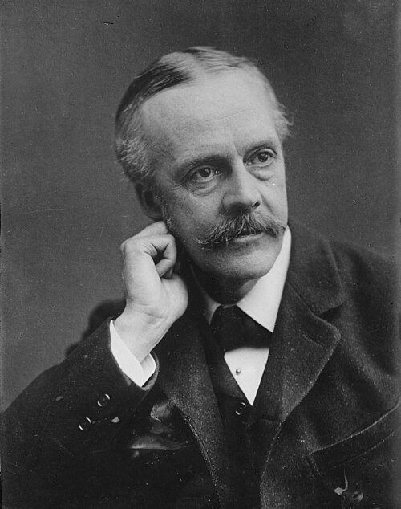
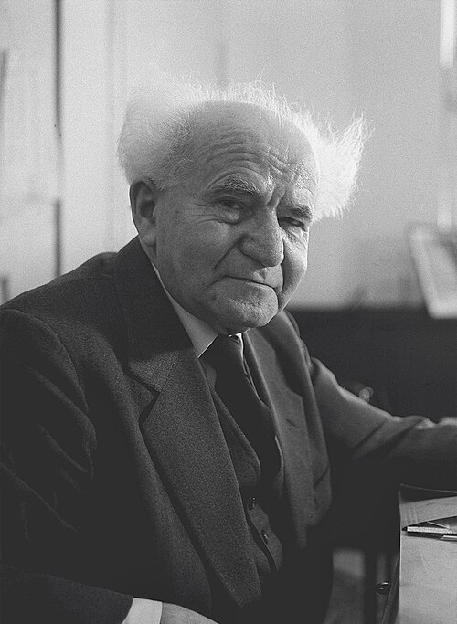
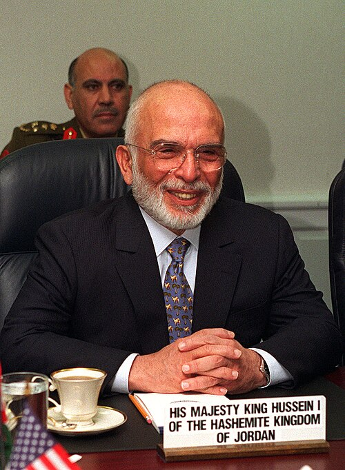
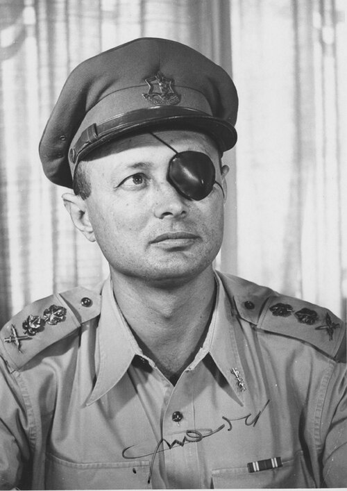
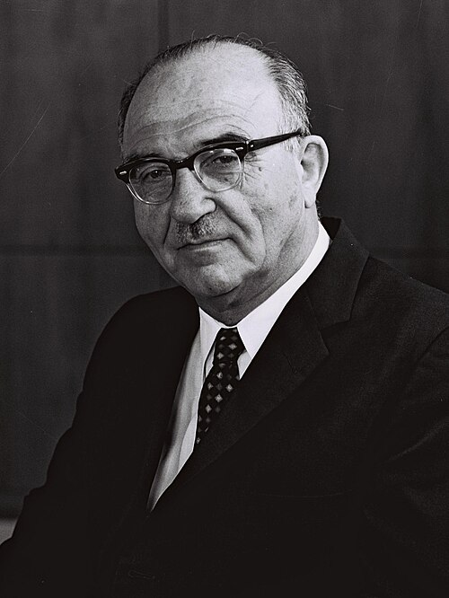
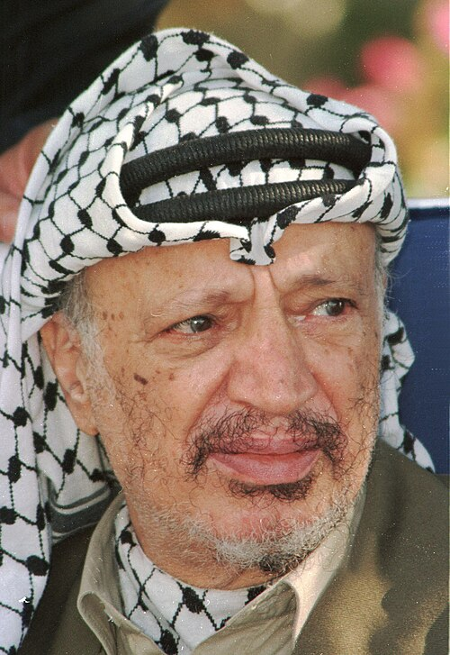
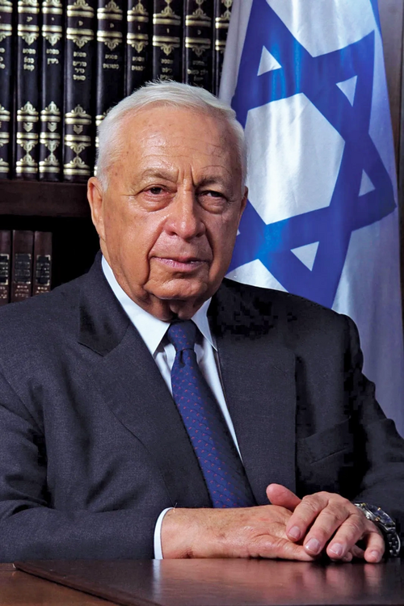
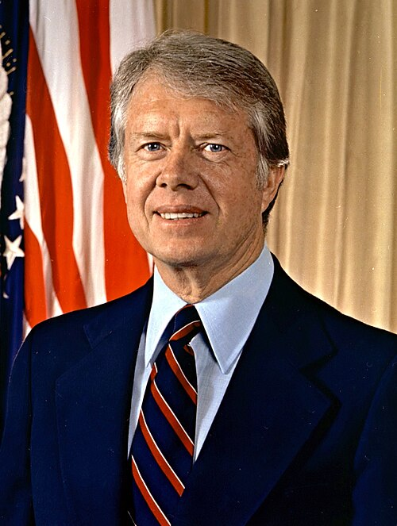
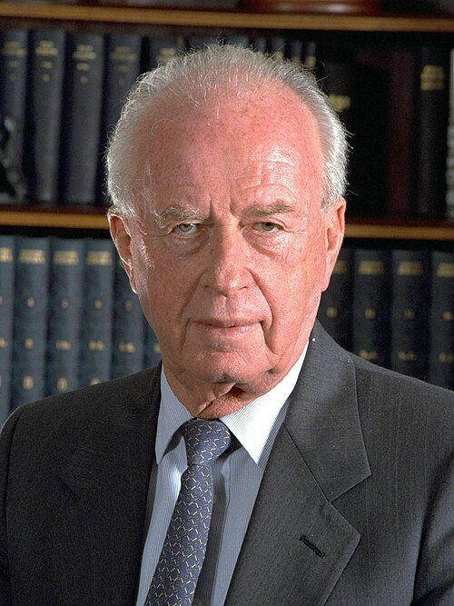

Arthur Balfour
British Foreign Secretary
Arthur Balfour promised the same piece of land to multiple different groups, creating a messy geopolitical tangle with the 1917 Balfour Declaration.

David Ben-Gurion
First Prime Minister of Israel
The driving force behind the creation of Israel. When the UN offered a partition plan, he grabbed it and built a nation while fighting off multiple armies in 1948.

King Hussein
King of Jordan
Caught in the middle of every major conflict, King Hussein spent decades trying to balance the needs of Palestinian refugees with his own kingdom's survival, eventually signing a peace treaty with Israel in 1994.

Moshe Dayan
Israeli Defense Minister
Often seen directing lightning-fast tank offensives across the Sinai desert, he was the face of Israel's military might during the 1967 Six-Day War.

Gamal Abdel Nasser
President of Egypt
Shocked the world by seizing the Suez Canal in 1956! Played the US and USSR against each other while championing Pan-Arabism and preparing for the 1967 war.

Levi Eshkol
Prime Minister of Israel
Reluctantly went to war in 1967, but oversaw one of the most stunningly swift and decisive military victories in modern history.

Golda Meir
Prime Minister of Israel
Caught off-guard by the 1973 surprise attack, she steadfastly led her nation through the crisis of the Yom Kippur War and eventually pushed the invaders back.

Yasser Arafat
Chairman of the PLO
Master of political survival, shifting from armed struggle and terrorism to diplomatic negotiations over decades of conflict, eventually signing the Oslo Accords.

Ariel Sharon
Israeli Defense Minister
Pushed his tanks all the way to Beirut in 1982, ignoring orders and creating massive international controversy, culminating in the Sabra and Shatila massacre.

Jimmy Carter
US President
Locked Menachem Begin and Anwar Sadat in a cabin until they agreed to peace at Camp David in 1978. An incredible display of stubborn diplomatic endurance.

Yitzhak Rabin
Prime Minister of Israel
A hardened war hero who famously forced himself to shake hands with Yasser Arafat on the White House lawn in 1993 in pursuit of peace. He was tragically assassinated in 1995.